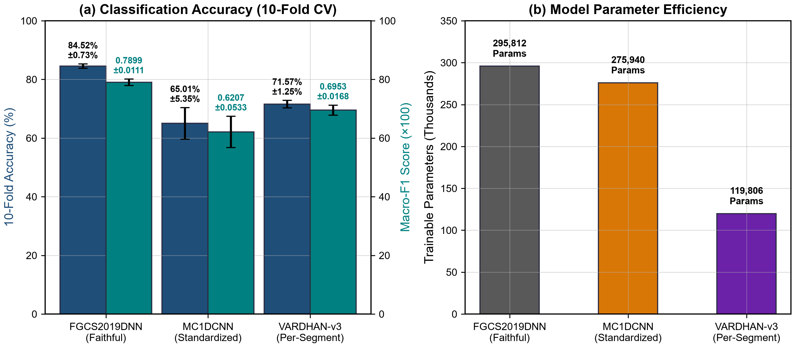
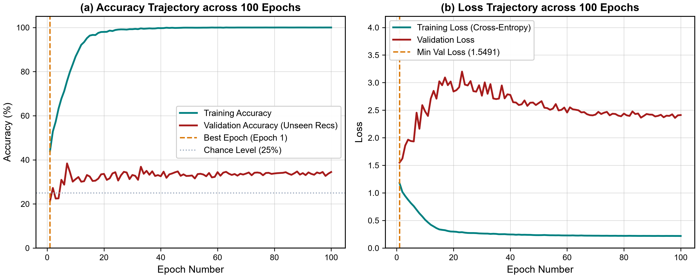
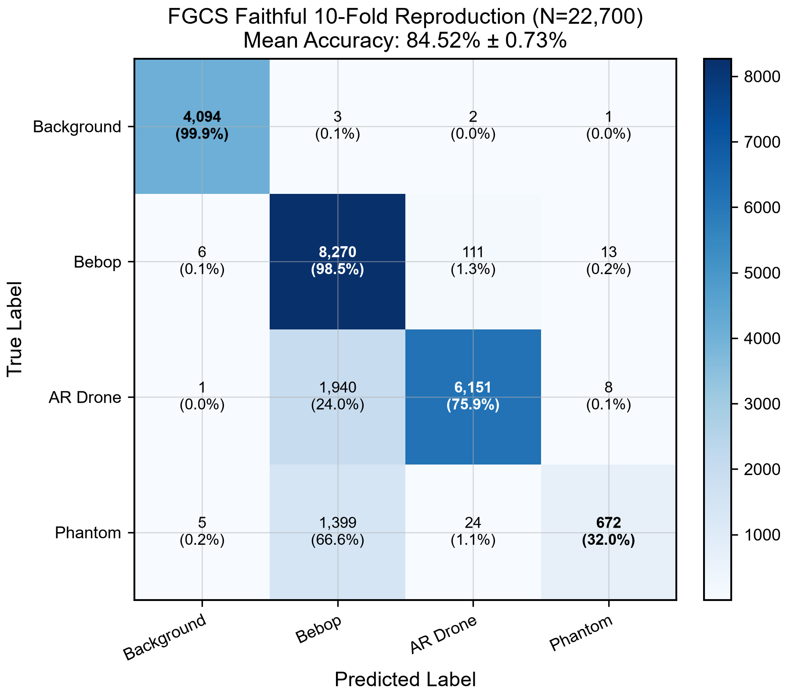
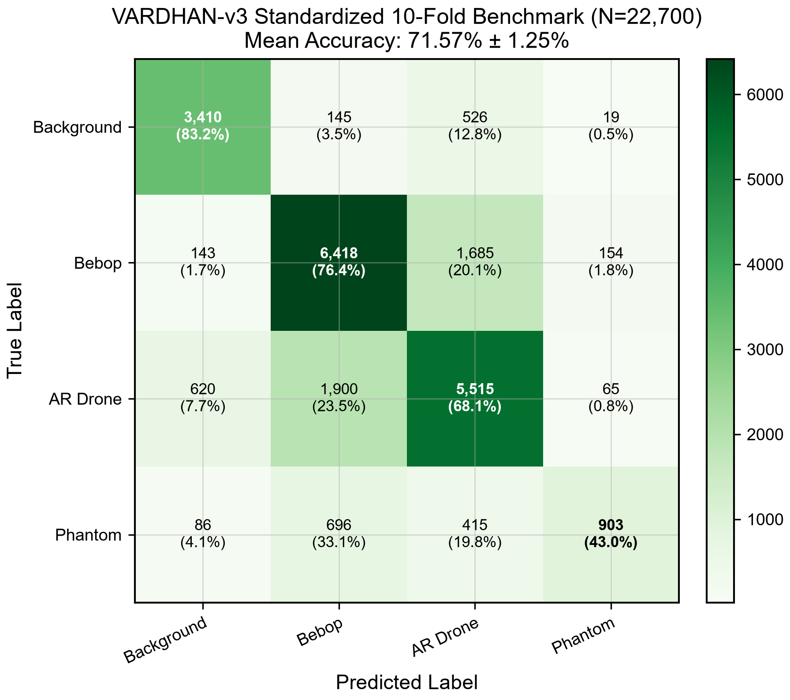
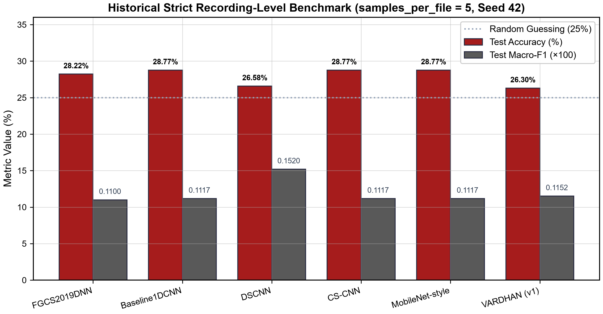
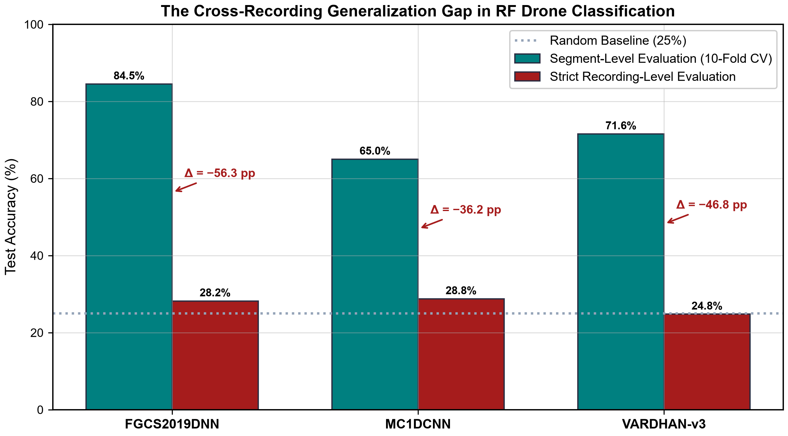

Results
All numbers on this page are taken directly from the result files in results/ (aggregate_metrics.json, fold_metrics.csv, confusion_matrix.csv and test_metrics.csv). Per-class metrics for the 10-fold benchmark are computed from the confusion matrices pooled over all 22,700 test predictions. Values that appear only in project reports are marked “as reported”.
1. 10-Fold Segment-Level Benchmark
| Model | Parameters | Accuracy | Macro-F1 | Balanced accuracy | Source |
|---|---|---|---|---|---|
| FGCS2019DNN (code mode) | 295,812 | 84.52% ± 0.73% | 0.7899 ± 0.0111 | 76.56%* | results/fgcs_faithful_reproduction/ |
| MC1DCNN | 275,940 | 65.01% ± 5.35% | 0.6207 ± 0.0533 | 62.95%* | results/baseline1dcnn_faithful_reproduction/ |
| VARDHAN-v3 | 119,806 | 71.57% ± 1.25% | 0.6953 ± 0.0168 | 67.67% ± 2.03% | results/vardhan_v3_per_segment_10fold/ |
* Mean of per-fold macro recall, which equals balanced accuracy; the baseline scripts did not log balanced accuracy directly.
The faithful FGCS2019DNN reproduction matches the 84.5% reported in the original paper, validating the reproduced pipeline. VARDHAN-v3 outperforms MC1DCNN by 6.6 percentage points with less than half the parameters and much lower fold-to-fold variance (±1.25% vs ±5.35%), but remains 13 points below FGCS2019DNN under this protocol. FGCS2019DNN uses the stitched L+H spectrum covering the full 80 MHz, whereas VARDHAN-v3 sees a 2048-sample slice from a single 40 MHz receiver.


2. Per-Fold Results
| Fold | Accuracy | Macro-F1 | Macro precision | Macro recall | Test loss | Train time (s) |
|---|---|---|---|---|---|---|
| 1 | 85.15% | 0.8049 | 0.9136 | 0.7789 | 0.0573 | 1,169 |
| 2 | 85.20% | 0.7983 | 0.9218 | 0.7726 | 0.0577 | 1,227 |
| 3 | 83.70% | 0.7742 | 0.9070 | 0.7525 | 0.0632 | 1,170 |
| 4 | 85.29% | 0.8049 | 0.9158 | 0.7786 | 0.0579 | 1,153 |
| 5 | 84.89% | 0.8002 | 0.9155 | 0.7743 | 0.0576 | 1,125 |
| 6 | 84.14% | 0.7839 | 0.9158 | 0.7603 | 0.0603 | 1,015 |
| 7 | 84.19% | 0.7845 | 0.9150 | 0.7606 | 0.0603 | 1,109 |
| 8 | 84.80% | 0.7860 | 0.9165 | 0.7631 | 0.0583 | 1,167 |
| 9 | 84.80% | 0.7829 | 0.9058 | 0.7612 | 0.0602 | 1,125 |
| 10 | 83.08% | 0.7790 | 0.9134 | 0.7540 | 0.0644 | 1,197 |
| Fold | Accuracy | Macro-F1 | Macro precision | Macro recall | Test loss | Train time (s) |
|---|---|---|---|---|---|---|
| 1 | 64.32% | 0.6262 | 0.8574 | 0.6343 | 0.6547 | 155 |
| 2 | 60.40% | 0.5790 | 0.8506 | 0.6053 | 0.6794 | 154 |
| 3 | 63.35% | 0.5977 | 0.8547 | 0.6101 | 0.7281 | 156 |
| 4 | 77.22% | 0.7424 | 0.8901 | 0.7189 | 0.6742 | 155 |
| 5 | 60.97% | 0.5904 | 0.8400 | 0.6139 | 0.6724 | 158 |
| 6 | 62.42% | 0.5898 | 0.8549 | 0.6069 | 0.6702 | 157 |
| 7 | 69.96% | 0.6673 | 0.8728 | 0.6565 | 0.6597 | 155 |
| 8 | 68.41% | 0.6537 | 0.8703 | 0.6471 | 0.6914 | 156 |
| 9 | 60.97% | 0.5756 | 0.8239 | 0.5971 | 0.7114 | 156 |
| 10 | 62.07% | 0.5852 | 0.8633 | 0.6047 | 0.6780 | 155 |
| Fold | Best epoch | Accuracy | Macro-F1 | Balanced accuracy | Test loss |
|---|---|---|---|---|---|
| 1 | 5 | 71.54% | 0.7027 | 68.38% | 0.7788 |
| 2 | 6 | 71.54% | 0.6879 | 66.67% | 0.7726 |
| 3 | 6 | 72.11% | 0.6935 | 67.52% | 0.7683 |
| 4 | 5 | 70.84% | 0.6987 | 67.20% | 0.7766 |
| 5 | 6 | 72.56% | 0.7132 | 70.38% | 0.7608 |
| 6 | 4 | 73.26% | 0.7155 | 70.10% | 0.7593 |
| 7 | 5 | 72.42% | 0.7058 | 68.18% | 0.7404 |
| 8 | 6 | 72.16% | 0.6967 | 68.41% | 0.7580 |
| 9 | 4 | 68.55% | 0.6532 | 62.64% | 0.8299 |
| 10 | 5 | 70.70% | 0.6856 | 67.18% | 0.7922 |
Total VARDHAN-v3 10-fold run time: 2,265.2 s on an NVIDIA Tesla T4. Mean test loss 0.7737 ± 0.0230.
3. Confusion Matrices and Per-Class Metrics
Each matrix pools the test predictions of all 10 folds (22,700 segments). Rows are true classes and columns are predicted classes; the diagonal is highlighted. Class supports: Background 4,100, Bebop 8,400, AR 8,100, Phantom 2,100.
FGCS2019DNN
| True \ Predicted | Background | Bebop | AR | Phantom |
|---|---|---|---|---|
| Background | 4,094 | 3 | 2 | 1 |
| Bebop | 6 | 8,270 | 111 | 13 |
| AR | 1 | 1,940 | 6,151 | 8 |
| Phantom | 5 | 1,399 | 24 | 672 |
| Class | Precision | Recall | F1 |
|---|---|---|---|
| Background | 0.9971 | 0.9985 | 0.9978 |
| Bebop | 0.7122 | 0.9845 | 0.8265 |
| AR | 0.9782 | 0.7594 | 0.8550 |
| Phantom | 0.9683 | 0.3200 | 0.4810 |

MC1DCNN
| True \ Predicted | Background | Bebop | AR | Phantom |
|---|---|---|---|---|
| Background | 4,096 | 1 | 0 | 3 |
| Bebop | 1 | 6,827 | 1,558 | 14 |
| AR | 0 | 4,926 | 3,174 | 0 |
| Phantom | 2 | 1,140 | 298 | 660 |
| Class | Precision | Recall | F1 |
|---|---|---|---|
| Background | 0.9993 | 0.9990 | 0.9991 |
| Bebop | 0.5295 | 0.8127 | 0.6412 |
| AR | 0.6310 | 0.3919 | 0.4835 |
| Phantom | 0.9749 | 0.3143 | 0.4753 |
VARDHAN-v3
| True \ Predicted | Background | Bebop | AR | Phantom |
|---|---|---|---|---|
| Background | 3,410 | 145 | 526 | 19 |
| Bebop | 143 | 6,418 | 1,685 | 154 |
| AR | 620 | 1,900 | 5,515 | 65 |
| Phantom | 86 | 696 | 415 | 903 |
| Class | Precision | Recall | F1 |
|---|---|---|---|
| Background | 0.8007 | 0.8317 | 0.8159 |
| Bebop | 0.7007 | 0.7640 | 0.7310 |
| AR | 0.6774 | 0.6809 | 0.6791 |
| Phantom | 0.7914 | 0.4300 | 0.5572 |

Observations
- The Bebop/AR pair is the main source of confusion for all models; both are Parrot products using similar Wi-Fi-based links.
- Phantom recall is the weakest for every model (32.0% FGCS, 31.4% MC1DCNN, 43.0% VARDHAN-v3). VARDHAN-v3 has the highest Phantom recall and F1 (0.5572 vs 0.4810 and 0.4753).
- The spectrum-based baselines separate Background almost perfectly (> 99.8% recall) because they use both receiver bands; VARDHAN-v3, using a single-band 20.48 µs slice, reaches 83.2%.
4. Strict Recording-Level Benchmark
Key finding. When the test set contains only recording sessions never seen in training, every model – baselines and VARDHAN alike – falls to near the 25% chance level for four classes. Segment-level accuracy on DroneRF does not indicate how well a model generalises to new recordings.
VARDHAN-v3 (final strict run)
Configuration: 50 segments per file, 100 epochs, seed 42, AdamW (lr 3×10−4), cosine annealing, label smoothing 0.05, per-segment normalisation. Test set: 73 files from 4 unseen sessions, 3,650 segments.
| Test accuracy | 24.79% |
|---|---|
| Macro-F1 | 0.2005 |
| Balanced accuracy | 22.02% |
| Macro precision | 0.5184 |
| Test loss (cross-entropy) | 1.4735 |
| Best epoch (minimum validation loss) | 1 of 100 |
| Class | Precision | Recall | F1 | Support |
|---|---|---|---|---|
| Background | 0.6118 | 0.1450 | 0.2344 | 1,000 |
| AR | 0.2528 | 0.1952 | 0.2203 | 1,050 |
| Bebop | 0.2090 | 0.5152 | 0.2974 | 1,050 |
| Phantom | 1.0000 | 0.0255 | 0.0496 | 550 |
| Macro average | 0.5184 | 0.2202 | 0.2005 | 3,650 |
The best validation loss occurred after the first epoch; further training only fitted session-specific characteristics of the 15 training recordings. Phantom recall is 2.55% (14 of 550 segments), consistent with the receiver band shift between the training (H band) and test (L band) Phantom files. Predictions are skewed towards Bebop (51.5% recall, 20.9% precision).
Historical baselines (strict, 5 segments per file)
| Model | Input | Parameters | Accuracy | Macro-F1 | Macro precision | Macro recall |
|---|---|---|---|---|---|---|
| FGCS2019DNN (paper mode) | Power spectrum | 565,956 | 28.22% | 0.1100 | 0.0706 | 0.2500 |
| Baseline1DCNN | 8 sub-bands | 275,940 | 28.77% | 0.1117 | 0.0719 | 0.2500 |
| DSCNN | 1-D waveform | 68,228 | 26.58% | 0.1520 | 0.1800 | 0.2312 |
| CS-CNN | CS measurements | 1,059,908 | 28.77% | 0.1117 | 0.0719 | 0.2500 |
| MobileNet-style | 2-D spectrogram | 11,588 | 28.77% | 0.1117 | 0.0719 | 0.2500 |
A macro recall of exactly 0.2500 with macro precision near 0.07 means the model predicts one class for every segment. Four of the five baselines collapsed entirely to the majority class (Bebop). DSCNN is the only baseline with slightly non-trivial predictions (macro-F1 0.1520). VARDHAN-v3 does not collapse (macro-F1 0.2005, the highest under the strict protocol), but its accuracy is still near chance.

5. Generalisation Gap
| Model | 10-fold segment-level | Strict recording-level | Gap (points) |
|---|---|---|---|
| FGCS2019DNN | 84.52% | 28.22% | −56.30 |
| MC1DCNN | 65.01% | 28.77% | −36.24 |
| VARDHAN-v3 | 71.57% | 24.79% | −46.78 |
The strict baseline values come from the historical runs (5 segments/file, 5 epochs); the FGCS strict run used the paper-mode architecture. The gaps show the size of the effect; they are not a controlled comparison.

Causes
- Recording-session domain shift – segments from one session share transmitter, receiver, propagation and environment characteristics, which models learn as shortcuts.
- High intra-recording correlation – consecutive segments are strongly correlated, violating the independence assumption behind random segment splits.
- Phantom band shift – training Phantom files are H-band (2.462 GHz) and test files are L-band (2.422 GHz).
- Time-variant channel effects – multipath and interference differ between sessions.
- Few independent sessions – only 15 training sessions are available to learn session-invariant features.
6. Normalisation Ablation
| Normalisation | Accuracy | Macro-F1 | Background recall | Behaviour |
|---|---|---|---|---|
| Global train-fold Z-score (1-fold diagnostic) | 45.55% | 0.3459 | 0.00% | Collapse towards Bebop (Bebop recall 99.29%) |
| Per-segment (10-fold) | 71.57% ± 1.25% | 0.6953 ± 0.0168 | 83.17% | Stable across folds |
With a single global mean and standard deviation, high-amplitude transmitters such as the Phantom (about 2.4× the average power of other classes; see Signal Analysis §7) dominate the scaling, and low-amplitude Background segments are squeezed into a narrow range. Per-segment normalisation makes the representation independent of amplitude and was adopted for all final VARDHAN-v3 experiments.